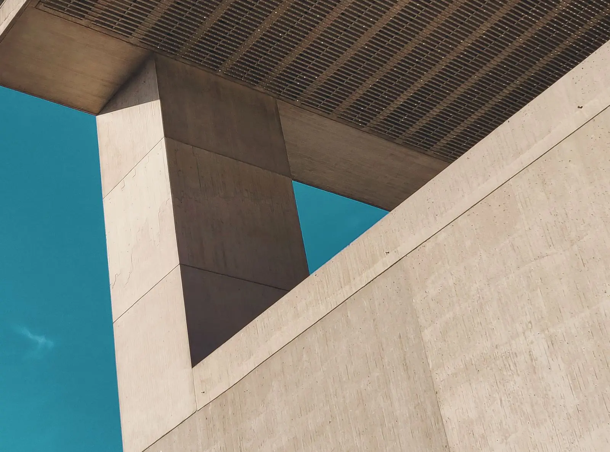

Tour 3DMaquete de referência
Explore a arquitetura
A maquete nasce do traço do projeto e ganha volume, como acontece na obra. É assim que você vê a casa antes da primeira estaca.
Arraste para girar. No anteprojeto, cada cliente recebe a maquete da própria casa para abrir no celular.

Arraste para girar · casa de referência, não é obra da Monólito
Por que 3D
Entender o volume antes de construir
Planta baixa nem sempre mostra o que importa: a altura de um pé-direito, a sombra de um beiral, a vista de uma janela.
No anteprojeto
A volumetria da casa em 3D, com o terreno, para avaliar implantação, alturas e aberturas.
No interior
Imagens dos ambientes com os materiais escolhidos. Teste combinações no explorador de acabamentos.
Na obra
A maquete ajuda a equipe a entender encontros e detalhes difíceis antes de executar.
Inicie seu projeto.
Primeira conversa sem custo
Conte o que você quer construir ou reformar. Respondemos em até dois dias úteis com os próximos passos e uma primeira conversa com a arquiteta responsável.